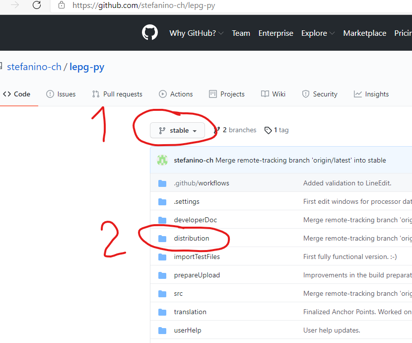

Konfiguration des Update Checkers¶
Während dem Start überprüft lepg ob eine neuere Version heruntergeladen werden könnte.
Folgende Konfigurationsmöglichkeiten stehen zur Verfügung:
Mit der Checkbox kann die Funktion komplett deaktiviert werden. Du wirst nicht mehr informiert sollte es eine neuere Version geben.
Branch: von lepg gibt es zwei Versionen
stable: die Version welche im Normalfall verwendet werden sollte. Neue Funktionen stehen hier erst zur Verfügung wenn sie komplett funktionieren.
latest: die neueste und aktuellste Version. Aber Achtung hier fliessen die Entwicklungen zusammen, es kann viele Updates geben und teilweise nicht komplett fertig implementiert Funktionen.
Herunterladen von neuen Versionen¶
Neue Versionen könnten von Github heruntergeladen werden.
Dort stehen beide Versionen zur Verfügung.

Zuerst auswählen welche Version man haben möchte, stable oder latest.
Dann im Ordner “distribution” das entsprechende . zip Paket herunterladen.
Nach dem Herunterladen¶
Das .zip Paket kann an einem beliebigen Ort entpackt werden.
Danach in den Ordner “lepg” wechseln und die Datei lepg.exe ausführen (doppelklicken).
Nicht vergessen: Die beiden Prozessoren müssen neu konfiguriert werden!